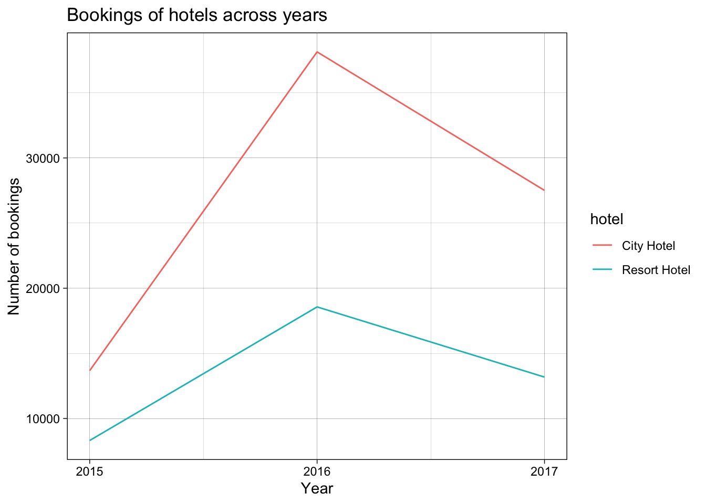
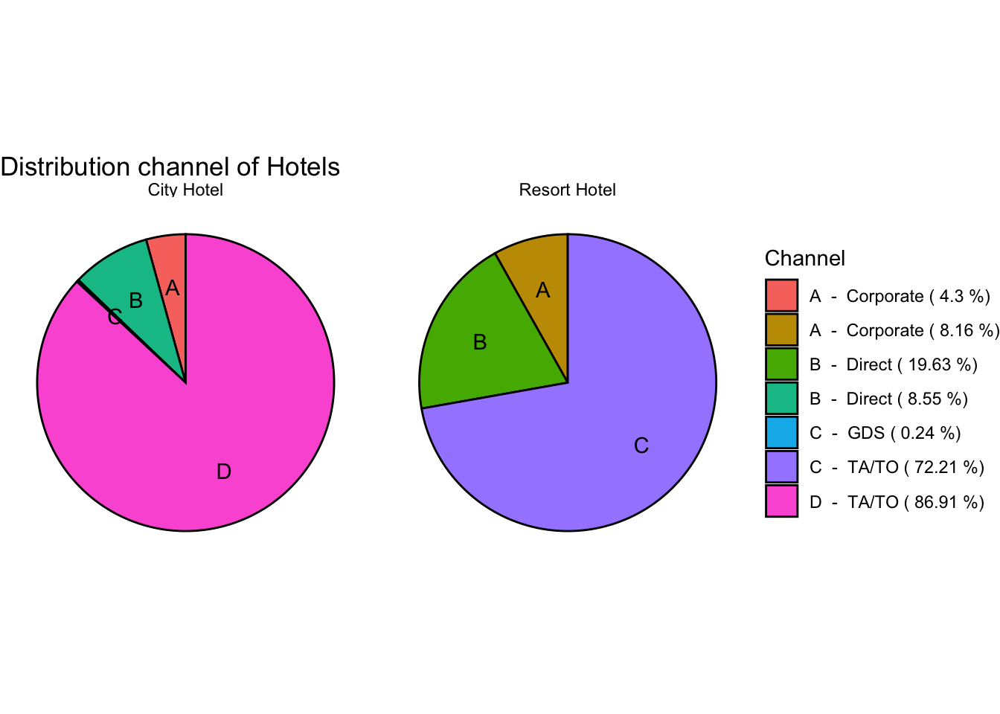

library(tidyverse)
library(ggplot2)
knitr::opts_chunk$set(echo = TRUE, warning=FALSE, message=FALSE)Challenge 6 - Hotel Bookings
challenge_6
hotel_bookings
srujan_kagitala
Visualizing Time and Relationships
Challenge Overview
Today’s challenge is to:
- read in a data set, and describe the data set using both words and any supporting information (e.g., tables, etc)
- tidy data (as needed, including sanity checks)
- mutate variables as needed (including sanity checks)
- create at least one graph including time (evolution)
- try to make them “publication” ready (optional)
- Explain why you choose the specific graph type
- Create at least one graph depicting part-whole or flow relationships
- try to make them “publication” ready (optional)
- Explain why you choose the specific graph type
R Graph Gallery is a good starting point for thinking about what information is conveyed in standard graph types, and includes example R code.
(be sure to only include the category tags for the data you use!)
Read in data
Read in one (or more) of the following datasets, using the correct R package and command. - hotel_bookings ⭐⭐⭐⭐
booking_data <- read_csv("_data/hotel_bookings.csv")
head(booking_data)# A tibble: 6 × 32
hotel is_canceled lead_time arrival_date_year arrival_date_month
<chr> <dbl> <dbl> <dbl> <chr>
1 Resort Hotel 0 342 2015 July
2 Resort Hotel 0 737 2015 July
3 Resort Hotel 0 7 2015 July
4 Resort Hotel 0 13 2015 July
5 Resort Hotel 0 14 2015 July
6 Resort Hotel 0 14 2015 July
# ℹ 27 more variables: arrival_date_week_number <dbl>,
# arrival_date_day_of_month <dbl>, stays_in_weekend_nights <dbl>,
# stays_in_week_nights <dbl>, adults <dbl>, children <dbl>, babies <dbl>,
# meal <chr>, country <chr>, market_segment <chr>,
# distribution_channel <chr>, is_repeated_guest <dbl>,
# previous_cancellations <dbl>, previous_bookings_not_canceled <dbl>,
# reserved_room_type <chr>, assigned_room_type <chr>, …Most of the tidying is similar to challenge 4.
Briefly describe the data
#Number of bookings per hotel.
no_bookings_by_hotel <- booking_data %>%
group_by(hotel) %>%
summarise(count = n())This data set contains booking data of City Hotel, Resort Hotel. It contains 119390 bookings information. 79330 and 40060 observations are respectively captured from City Hotel and Resort Hotel. The information available per booking are hotel, is_canceled, lead_time, arrival_date_year, arrival_date_month, arrival_date_week_number, arrival_date_day_of_month, stays_in_weekend_nights, stays_in_week_nights, adults, children, babies, meal, country, market_segment, distribution_channel, is_repeated_guest, previous_cancellations, previous_bookings_not_canceled, reserved_room_type, assigned_room_type, booking_changes, deposit_type, agent, company, days_in_waiting_list, customer_type, adr, required_car_parking_spaces, total_of_special_requests, reservation_status, reservation_status_date.
Tidy Data (as needed)
Is your data already tidy, or is there work to be done? Be sure to anticipate your end result to provide a sanity check, and document your work here.
All character variables have to be converted to factor to get valuable insights from summary. We can drop ‘arrival_date_week_number’ variable because this is redundant information. If we want to do some analysis to find effective marketing strategies,we need to drop rows with NA values(Undefined) for distribution_channel and market_segment variables. After all this pre processing, we will be left with observations less than or equal to 119390 and 31 columns.
# Drop rows with NA values for market_segment, distribution_channel.
# Convert character variables to factor.
# Drop arrival_date_week_number variable.
clean_booking_data <- booking_data %>%
filter(distribution_channel != "Undefined",
market_segment != "Undefined") %>%
mutate_if(is.character, as.factor) %>%
select (-arrival_date_week_number)
summary(clean_booking_data) hotel is_canceled lead_time arrival_date_year
City Hotel :79326 Min. :0.0000 Min. : 0 Min. :2015
Resort Hotel:40059 1st Qu.:0.0000 1st Qu.: 18 1st Qu.:2016
Median :0.0000 Median : 69 Median :2016
Mean :0.3704 Mean :104 Mean :2016
3rd Qu.:1.0000 3rd Qu.:160 3rd Qu.:2017
Max. :1.0000 Max. :737 Max. :2017
arrival_date_month arrival_date_day_of_month stays_in_weekend_nights
August :13873 Min. : 1.0 Min. : 0.0000
July :12660 1st Qu.: 8.0 1st Qu.: 0.0000
May :11791 Median :16.0 Median : 1.0000
October:11160 Mean :15.8 Mean : 0.9276
April :11089 3rd Qu.:23.0 3rd Qu.: 2.0000
June :10939 Max. :31.0 Max. :19.0000
(Other):47873
stays_in_week_nights adults children babies
Min. : 0.0 Min. : 0.000 Min. : 0.0000 Min. : 0.000000
1st Qu.: 1.0 1st Qu.: 2.000 1st Qu.: 0.0000 1st Qu.: 0.000000
Median : 2.0 Median : 2.000 Median : 0.0000 Median : 0.000000
Mean : 2.5 Mean : 1.856 Mean : 0.1039 Mean : 0.007949
3rd Qu.: 3.0 3rd Qu.: 2.000 3rd Qu.: 0.0000 3rd Qu.: 0.000000
Max. :50.0 Max. :55.000 Max. :10.0000 Max. :10.000000
meal country market_segment distribution_channel
BB :92306 PRT :48585 Aviation : 237 Corporate: 6677
FB : 798 GBR :12129 Complementary: 743 Direct :14645
HB :14462 FRA :10415 Corporate : 5295 GDS : 193
SC :10650 ESP : 8568 Direct :12604 TA/TO :97870
Undefined: 1169 DEU : 7287 Groups :19811
ITA : 3766 Offline TA/TO:24219
(Other):28635 Online TA :56476
is_repeated_guest previous_cancellations previous_bookings_not_canceled
Min. :0.00000 Min. : 0.00000 Min. : 0.0000
1st Qu.:0.00000 1st Qu.: 0.00000 1st Qu.: 0.0000
Median :0.00000 Median : 0.00000 Median : 0.0000
Mean :0.03191 Mean : 0.08712 Mean : 0.1371
3rd Qu.:0.00000 3rd Qu.: 0.00000 3rd Qu.: 0.0000
Max. :1.00000 Max. :26.00000 Max. :72.0000
reserved_room_type assigned_room_type booking_changes deposit_type
A :85993 A :74052 Min. : 0.0000 No Deposit:104636
D :19201 D :25322 1st Qu.: 0.0000 Non Refund: 14587
E : 6535 E : 7806 Median : 0.0000 Refundable: 162
F : 2897 F : 3751 Mean : 0.2211
G : 2094 G : 2553 3rd Qu.: 0.0000
B : 1114 C : 2375 Max. :21.0000
(Other): 1551 (Other): 3526
agent company days_in_waiting_list customer_type
9 :31960 NULL :112588 Min. : 0.000 Contract : 4076
NULL :16337 40 : 927 1st Qu.: 0.000 Group : 577
240 :13922 223 : 784 Median : 0.000 Transient :89612
1 : 7191 67 : 267 Mean : 2.321 Transient-Party:25120
14 : 3639 45 : 250 3rd Qu.: 0.000
7 : 3539 153 : 215 Max. :391.000
(Other):42797 (Other): 4354
adr required_car_parking_spaces total_of_special_requests
Min. : -6.38 Min. :0.00000 Min. :0.0000
1st Qu.: 69.29 1st Qu.:0.00000 1st Qu.:0.0000
Median : 94.59 Median :0.00000 Median :0.0000
Mean : 101.83 Mean :0.06251 Mean :0.5713
3rd Qu.: 126.00 3rd Qu.:0.00000 3rd Qu.:1.0000
Max. :5400.00 Max. :8.00000 Max. :5.0000
reservation_status reservation_status_date
Canceled :43013 Min. :2014-10-17
Check-Out:75165 1st Qu.:2016-02-02
No-Show : 1207 Median :2016-08-07
Mean :2016-07-30
3rd Qu.:2017-02-08
Max. :2017-09-14
So, we have 119385 observations and 31 columns after cleaning the data.
Are there any variables that require mutation to be usable in your analysis stream? For example, do you need to calculate new values in order to graph them? Can string values be represented numerically? Do you need to turn any variables into factors and reorder for ease of graphics and visualization?
There are three independent variables for arrival_date_year, arrival_date_month, arrival_date_day_of_month which is unnecessary. Hence, they can be combined to one variable arrival_date. But we will preserve arrival_year to show some interesting visualizations. Also, variables like is_canceled, is_repeated_guest have to be converted to Boolean instead of integer for readability. We will be left with 30 columns after this step.
# combine day, month and year columns to date column.
# Remove arrival_date_week_number_column.
booking_data_tidy <- clean_booking_data %>%
mutate(arrival_date = as.Date(paste(arrival_date_month,
arrival_date_day_of_month,
arrival_date_year, sep = "-"),
format="%B-%d-%Y"),
is_repeated_guest = as.logical(is_repeated_guest),
is_canceled = as.logical(is_canceled)) %>%
select(-arrival_date_month,
-arrival_date_day_of_month)
head(booking_data_tidy)# A tibble: 6 × 30
hotel is_canceled lead_time arrival_date_year stays_in_weekend_nights
<fct> <lgl> <dbl> <dbl> <dbl>
1 Resort Hotel FALSE 342 2015 0
2 Resort Hotel FALSE 737 2015 0
3 Resort Hotel FALSE 7 2015 0
4 Resort Hotel FALSE 13 2015 0
5 Resort Hotel FALSE 14 2015 0
6 Resort Hotel FALSE 14 2015 0
# ℹ 25 more variables: stays_in_week_nights <dbl>, adults <dbl>,
# children <dbl>, babies <dbl>, meal <fct>, country <fct>,
# market_segment <fct>, distribution_channel <fct>, is_repeated_guest <lgl>,
# previous_cancellations <dbl>, previous_bookings_not_canceled <dbl>,
# reserved_room_type <fct>, assigned_room_type <fct>, booking_changes <dbl>,
# deposit_type <fct>, agent <fct>, company <fct>, days_in_waiting_list <dbl>,
# customer_type <fct>, adr <dbl>, required_car_parking_spaces <dbl>, …So, we have 119385 observations and 30 columns after combing all the date related variables to “arrival_date” variable.
Time Dependent Visualization
total_hotel_bookings_by_year <- clean_booking_data %>%
group_by(hotel, arrival_date_year) %>%
summarise(no_bookings = n())
ggplot(total_hotel_bookings_by_year,
aes(x= arrival_date_year, y = no_bookings, colour = hotel)) +
geom_line() +
scale_x_continuous(breaks = c(2015, 2016, 2017),
labels = c("2015", "2016", "2017")) +
theme_linedraw()+
labs(title = "Bookings of hotels across years",
x = "Year",
y = "Number of bookings")
Visualizing Part-Whole Relationships
(distribution_channel_data <- clean_booking_data %>%
group_by(hotel, distribution_channel) %>%
summarise(count = n()) %>%
mutate(percent = count * 100 / sum(count),
id = LETTERS[row_number()]))# A tibble: 7 × 5
# Groups: hotel [2]
hotel distribution_channel count percent id
<fct> <fct> <int> <dbl> <chr>
1 City Hotel Corporate 3408 4.30 A
2 City Hotel Direct 6780 8.55 B
3 City Hotel GDS 193 0.243 C
4 City Hotel TA/TO 68945 86.9 D
5 Resort Hotel Corporate 3269 8.16 A
6 Resort Hotel Direct 7865 19.6 B
7 Resort Hotel TA/TO 28925 72.2 C # pie chart of above room distribution data
ggplot(distribution_channel_data,
aes(x = "", y = percent,
fill = paste(id,' - ',distribution_channel,'(',round(percent,2),'%)'))) +
geom_bar(width = 10, stat = "identity", color = "black") +
geom_text(aes(x = 2.5, label = id),
position = position_stack(vjust=0.5),
color = "black") +
coord_polar("y", start = 0) +
theme(axis.title.y = element_blank(),
axis.text.y = element_blank(),
axis.ticks.y = element_blank(),
axis.title.x = element_blank(),
axis.text.x = element_blank(),
axis.ticks.x = element_blank(),) +
facet_wrap(~hotel) +
theme_void() +
labs(title = "Distribution channel of Hotels",
fill = "Channel")